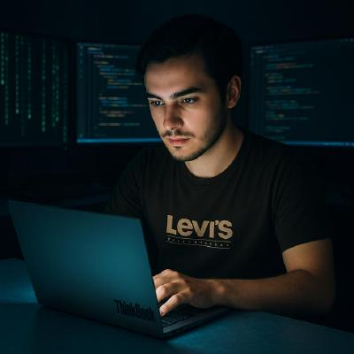

FULL STACK AI DRIVEN SYSTEM ARCHITECT
I am a Full Stack AI driven System Architect. My love of technology and desire to always build something new and impressive drive me to dive into new technologies. I am passionate about learning core skills alongside the practical projects. My inspiration to learn AI and Machine Learning is ironman's jarvis. I love making complex systems including real world problems. I solve problems using incremental approach making the system less commplicated than the before
ML // DL // GEN AI
Shopping platform having AI features like harmful product detection, Product recomendation system, Review Sentiment Anaysis, Chatbot for Shopping, Next word predictor for search
ACCESS_REPOSITORYGEN AI // REACT // KAFKA
A facebook like system but instead of personal posts people can create and find AI solutions on Our Website. Made Abstraction of unskilled people to create their AI system
ACCESS_REPOSITORYDL // PYTHON // EXPRESS
A Binance clone along with a market analysis bot along with a future indicator prediction for stocks.
ACCESS_REPOSITORYC++
Implementation of React Fibre Data Struture and Reconncilation algorithm
ACCESS_REPOSITORYGrpahQL // React js //Laravel
An Ai driven Project management system like Jira where we can Do Crud on Tasks and Project and workspaces, Brain strom with AI about project and task, Generate MindMaps
ACCESS_REPOSITORY